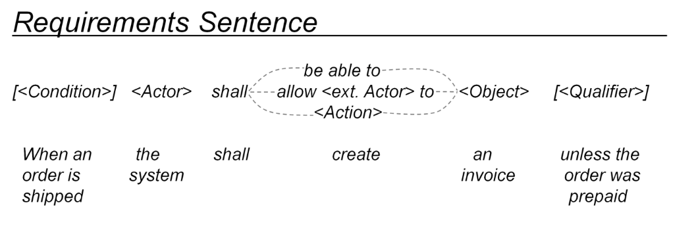
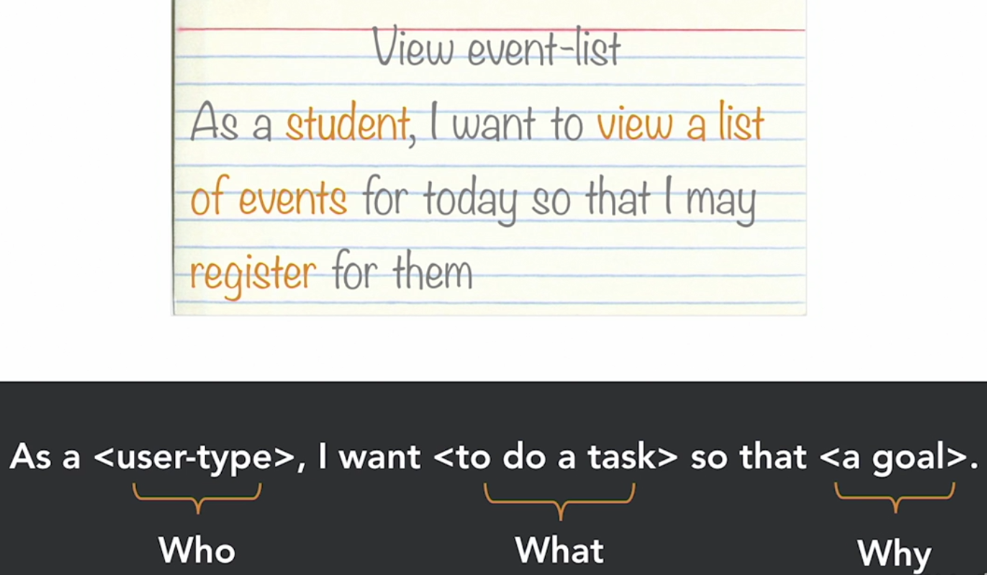
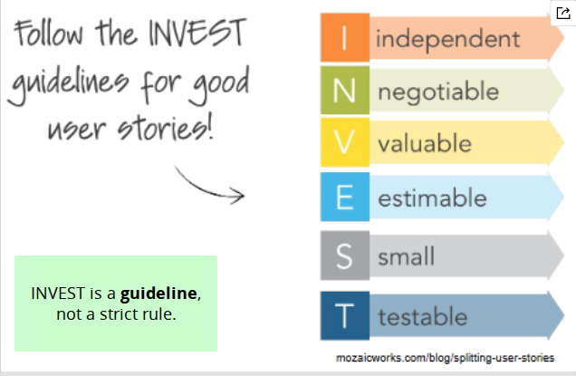
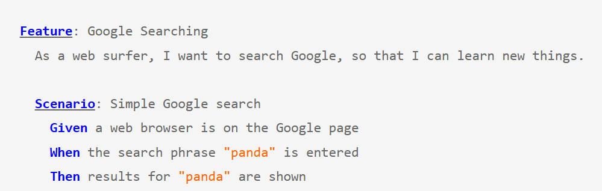
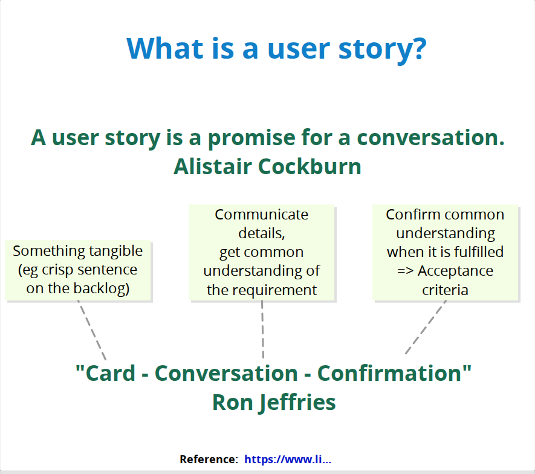
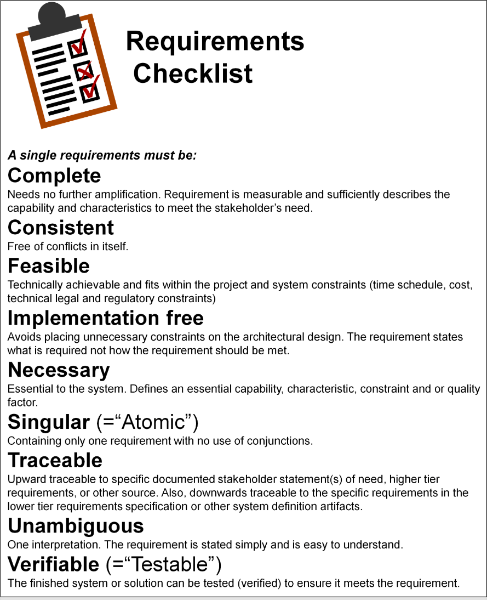

5. Requirement Elicitation (Gathering and acquiring requirements)
Eliciting requirements is a critical and often the most difficult phase of Requirements Engineering. It is not merely a matter of "writing down" what the customer dictates. Customers often do not know exactly what they want, or are unable to articulate technical and qualitative constraints (hidden requirements). The Architect (SWA) and Requirements Engineer (RE) must actively "mine" this information.
#Formal requirement notation (SOPHIST / MASTeR template - Mustergueltige Anforderungen – die SOPHIST Templates fuer Requirements)
(the name of the German consulting company SOPHIST GmbH) To eliminate ambiguity in technical specifications, standardized sentence templates are used. The best known approach is SOPHIST, which forces the analyst to define a requirement in a clear structure:
[Condition] – [Actor/System] – [Legal obligation] – [Action] – [Object] – [Qualifier/Constraint]
- Condition: When should it happen? (e.g., "In the event of a power failure...")
- Actor/System: Who does it? ("...the backup system must...")
- Obligation: Shall, should, or may? ("...must...")
- Action: What exactly happens? ("...restore...")
- Object: What does it concern? ("...the last saved database state...")
- Qualifier/Constraint: By when / how fast / how precisely? ("...within 3 seconds of the failure.")

This approach is key to ensuring that a requirement is testable and does not contain so-called "weasel words" (vague words such as quickly, user-friendly, robustly).
#Approaches to requirements: Agile
Agile environments (Scrum, Kanban) approach requirements iteratively. The goal is not to create a perfect document at the outset, but to maximize value and adaptability.
User Story: The most common format for expressing a functional requirement from the user's perspective. Format:
As a [ROLE], I want [FEATURE/ACTION] so that [BUSINESS VALUE/BENEFIT].
I.N.V.E.S.T. rules for User Stories: The software architect helps the Product Owner ensure that stories meet these criteria:
- Independent — The story can be developed and tested independently of others.
- Negotiable — It is not a fixed contract; the team can propose a better technical solution.
- Valuable — It provides clear benefit to the customer.
- Estimable — The SWA must understand the complexity well enough for the team to estimate the effort (Story Points).
- Small — Can be completed within a single sprint. Here the SWA often helps with so-called "slicing" stories by architecture.
- Testable — Has clear acceptance criteria.

Behavior-Driven Development (BDD) and Acceptance Criteria: BDD is an approach to software development that brings business requirements, communication, and testing together into a single shared language. Instead of the team starting with implementation or technical tests, BDD is based on describing the expected behavior of the system through concrete examples. These examples are formulated so that non-technical roles can also understand them, reducing the scope for misunderstandings between developers, testers, analysts, and the customer. To define when a User Story is done, the Gherkin format is used. Format:
GIVEN (Initial state/Precondition) - WHEN (Triggering action) - THEN (Expected result).
This format directly connects RE with automated testing.
The 3 C's concept (Card, Conversation, Confirmation): The 3 C's concept is an agile principle for working with User Stories. It helps ensure that the team does not replace communication with extensive documentation but instead builds on a shared understanding through discussion. It consists of the following three parts:
Card: A physical card or ticket (for example, in Jira) that serves only as a brief reminder of the requirement, not as its complete specification.
Conversation: The essential discussion between the requester (the business) and the technical team. In this phase, the software architect actively addresses technical feasibility and possible risks.
Confirmation: The discussion results in clearly agreed acceptance criteria that determine how to objectively test and confirm that the requirement has been successfully completed.
This approach gives everyone involved confidence that they understand the task in the same way before development begins.

#Approaches to requirements: Waterfall and IEEE 29148
In traditional (predictive) project management, extensive documents of the SRS (Software Requirements Specification) type are produced. They are governed by the IEEE 29148 standard, which defines what a quality requirement should look like. A good requirement must be:
Necessary: If it is omitted, the system will not fulfil its purpose.
Implementation-free: It states "WHAT" is to happen, not "HOW" the programmer will write it (unless it is an explicit Constraint).
Unambiguous: It can be interpreted in only one way.
Complete: No conditions are missing from it.
Atomic/Singular: It contains only one idea. (Does not contain conjunctions "and," "or").
Feasible: Within the given budget and technology (This is a primary SWA responsibility!).
Traceable: Has a unique ID and can be traced back to a business goal.
Verifiable: Can be objectively proven (by a test) to have been met.
